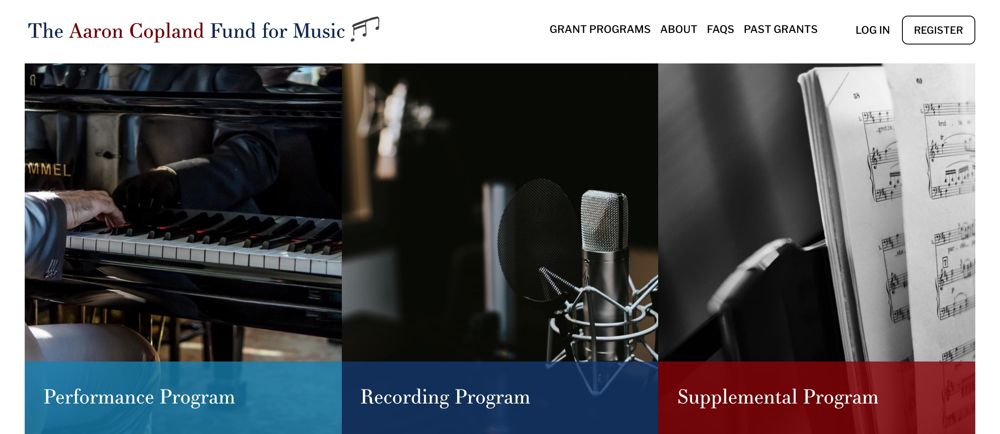
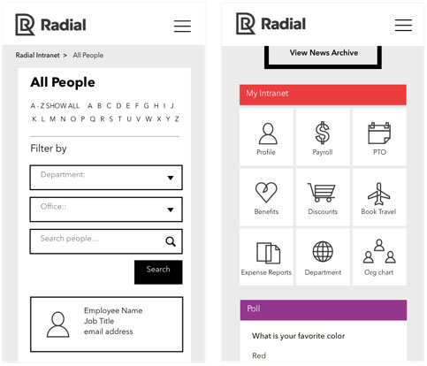

pharma
Novartis
lead front-end developer
Novartis International AG is a Swiss multinational pharmaceutical company based in Basel, Switzerland. It is one of the largest pharmaceutical companies by both market cap and sales.

With many independent sites for each of the countries Novartis serves, the old web ecosystem was complex, siloed, and outdated.
The new theme layer I was put in charge of conceiving and developing was designed to support over 150 websites and subsidiary companies, including some color scheme variations (ex: Alcon, Sandoz).
I lead the front end engineering team over 8 months of intensive development in Seattle working along the design team at Substantial. We worked with other teams spanning four different timezones, met tight deadlines and delivered a product that exceeded the client's expectations.
Note: The maintenance and development has since moved in-house and unfortunately does not reflect the initial effort.
NOVARTIS.COM
startup
Now An Then
lead front-end developer
Wonderful Machine is a production company that helps brands and agencies produce photoshoots and find photographers and stock photos. Their network of photographers spans around the world.
Wonderful Machine sought to create a website called NowAnThen.com that would allow people to create and share timelines of photos. No other photo sharing site displayed images in a chronological timeline that makes a story out of any group of pictures. They wanted to give users the ability to build timelines by grabbing photos from other timelines, or by uploading their own images.
We chose to decouple our own install profile with React for this project. It made perfect sense to just use Drupal for some basic functionality (paging, login and account creation, and obviously all the good backend stuff). Keeping this functionality as simple as possible was essential for this project. We chose to do the routing with Drupal as it seemed to add a lot of extra work with React for no legitimate reason. We basically decoupled the main content region of our theme layer.
We mad the Drupal data available to React through a custom module that passed the data through the Drupal.settings API. We used webPack to compile the JS and went through the usual npm workflow. Module installations were super simple, which was a nice change from the Drupal module world. It was all fun and games until we had to optimize for performance. We were building something that had not been done before and it required some serious brain twisting. The homepage is a timeline of all images on the site, and this is where things got interesting. We needed to imagine a scenario with, say, a timeline of one million images. As we are dealing with overflown content, it seemed clear we could only load what’s in the viewport, such as an infinite scroll. But it’s not that simple.
We wanted to provide a smooth experience while scrolling, so the regular infinite scroll was not exactly an ideal solution. Instead, we decided to work with subsets of 15 images loaded initially, loading the next subset at a half past scroll in any direction (and unmounting the subset on the further opposite). We also had to have the date scroller respond to the timeline both when dragging it, clicking anywhere on its axis, or on scrolling through the timeline. In the end, the challenges in this project had less to do with React itself and more to do with problem solving and implementation. React’s abilities excelled for the purpose of this project. It provided a complex solution to be implemented simply within the existing build.
NOWANTHEN.COM
non-profit
Power to Decide
lead front-end developer
Power to Decide, the campaign to prevent unplanned pregnancy, works to ensure that all young people—no matter who they are, where they live, or what their economic status might be—have the power to decide if, when, and under what circumstances to get pregnant. We do this by increasing information, access, and opportunity.

For these project we needed to migrate am old Drupal 7 instance to a new Drupal 8 installation while implementing a new design. With a 2 months timeline the challenge was great and the website was launched on time with a rather small backlog.
POWERTODECIDE.ORG
non-profit
The Aaron Copland Fund for Music
lead front-end developer
Created by late composer Aaron Copland, the Aaron Copland Fund for Music was established to improve public knowledge and encourage appreciation of contemporary American music. The "Dean of American Composers" left most of his estate to the fund in his name.

ACF needed a site that was diverse and responsive to many user needs. For users coming to the site to apply for grants, the grant page needed to clearly outline fields and options while being able to store all the information from grant applications. To streamline internal processes, ACF came to Zivtech to update their application that was bulky and difficult to manage. They struggled to keep up with the sheer amount of paper application copies, causing an inefficient review process.
Each of the Fund's grant programs require applicants to submit a lengthy application form. Traditionally, these forms were printed on paper, which meant that the various form segments were broken down into digestible sections. However, when we brought this online, we were left with a daunting form that was both confusing and difficult for applicants to navigate.
To overcome this problem, we broke the form into more navigable, manageable sections. This provided applicants with a well organized, easy to navigate, tab driven application form. Further enhancing the forms navigability, we added custom JavaScript Previous/Next tabs to the bottom of each form segment, allowing applicants to easily tab through the application without losing previously entered data.
With the application process now being completely paperless, we needed to provide users with the ability to complete the application form in stages without losing data.
We customized the form so that applicants can save their progress at any time before finishing. Applicants can then login to their account at a later date and continue the application. We also provided custom form validation that checks to ensure that all the required fields are complete before allowing the applicant to finally submit their application.
To further streamline the application process, we supplied applicants with the ability to copy completed applications from previous years, and use these as a starting point for the current year's grant cycle.
COPLANDFUND.ORG
education
Institute for Advanced Study
front-end developer
The Institute, established in 1930, began with twenty-three Members in the School of Mathematics with Albert Einstein as one of its first Professors. Since then, the Institute’s community of scholars has grown to include more than eight thousand historians, mathematicians, natural scientists, and social scientists. A Faculty of some thirty permanent Professors selects and mentors the roughly two hundred Members who arrive each year from around the world, about 60 percent from outside the United States, typically from more than thirty different countries.
We inherited the project as the previous vendor failed to build a scalable theme layer with reusable components. I was put in charge of refactoring the the code to achieved these goals and reduce the css bundle as well.
IAS.EDU
education
University of Pennsylvania’s Annenberg School for Communication
front-end developer
The University of Pennsylvania’s Annenberg School for Communication is one of the country’s first and best communication schools. Known for cutting-edge research to advance the role of communication in public and private life, Annenberg helps policymakers create a better media environment for citizens.

ASC needed to improve the look, feel, and general usability of their website. They were struggling to work with a website that did not live up to their reputation as one of the top communication schools in North America. Their former site lacked a simple way to input content and showed no apparent connections between pages.
Throughout the ASC site, people are associated with research areas and research centers, creating a network of relationships that weaves together news, events, videos, projects, and grants. The cross-pollination of ideas and scholarship is exemplified by the new homepage grid that dynamically generates groupings of 4 pieces of related content at a time: a faculty member, a graduate student, a research center, and the research area that unites them all. The relational network is also present on individual biography pages of faculty and students as well as the research areas that overlap departments within ASC.
As a result, our team was able to develop a beautifully architected site that visually depicts the inter-disciplinary connections throughout the ASC community.
ASC.UPENN.EDU
publishing network
Manhattan Neighborhood Network
lead front-end developer
Founded in 1992, Manhattan Neighborhood Network (MNN) is Manhattan’s nonprofit, public cable network. MNN operates media production, education facilities, and four cablecast channels reaching over a half million cable subscribers. MNN, with a staff of 50, helps Manhattan residents create media that fosters communication, education, and artistic expression in a non-commercial environment.
MNN's legacy site was insecure and very difficult to use, especially for mobile users. After further analysis, we found that the old site used many unreliable software plugins to display the programming schedule for Manhattan's residents.
I built a new, custom programming schedule by pulling data from a third party source to populate the programming for the online schedule. Our team set up integration with CiviCRM, an open source event and customer relationship management platform, to eliminate process redundancies. The team also redeveloped the scheduling API integration so that it’s more robust, stable, and secure.
MNN.ORG
web design and development agency
Zivtech
lead front-end developer
Founded in 2008, Zivtech is a full service web design and web development agency. Our work combines best of breed open source software with powerful cloud services.
I was put in charge of implementing the new design for the company as we were moving from an obsolete Drupal 7 site to the brand new Drupal 8 release at the time.
Internal projects often suffer from the "Cobbler's child" syndrome so I wanted do a really good job in the time warranted to have a site we could be proud about and and see grow from a solid, scalable base.
ZIVTECH.COM
enterprise
Radial
lead front-end developer
Radial is an omnichannel ecommerce fulfillment company that was created through the merger of eBay Enterprise and Innotrac. Headquartered in suburban Philadelphia, Radial supports 7,000 employees globally and helps retailers manage transactions from purchase to fulfillment.
In order to lower costs for Radial while improving employee adoption, we built a customized intranet that included all their desired features. Through a thorough research and discovery phase with the IT department and end users, we made the system intuitive so that employees could easily adopt the intranet and eliminate the workarounds they were using. Radial's new custom intranet allowed them to part ways with an expensive out-of-box solution that was poorly adopted and didn't meet all of their needs.
One of the intranet's primary goals was to create an easier way for employees to locate information about their co-workers. We developed an interactive organization chart that allows a user to click around a seating chart to find locations of conference rooms, where employees sit, and information about their roles and responsibilities. The seating chart syncs up with employees’ profile pages and org charts to provide up to date information in one easy location.

After analyzing Radial's business needs along with user needs and priorities, we also transformed the information architecture of the site. By re-structuring the menu hierarchy of the site, Zivtech was able to provide an intuitive and comprehensive way for users to obtain exactly what they need in a timely manner all while incorporating a fresh, clean, and responsive design.
RADIAL.COM